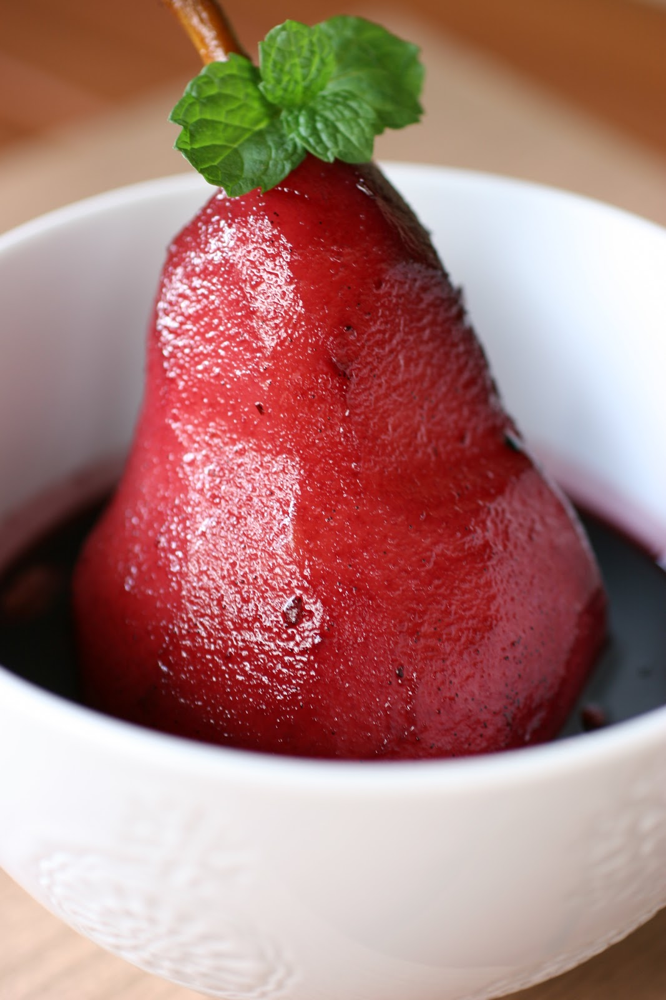
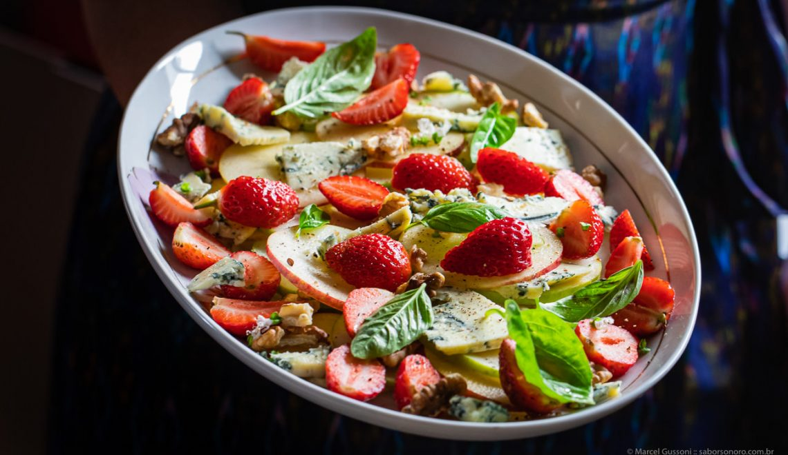
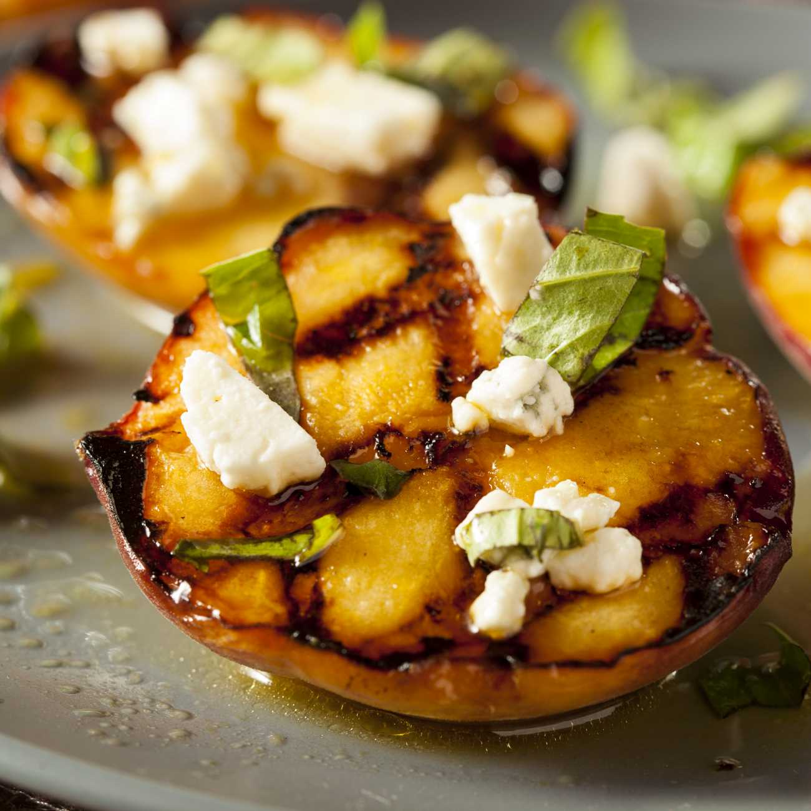

A pera, fruto da pereira do gênero Pyrus (família Rosaceae), tem sua origem na Ásia e no Oriente Médio, com evidências de cultivo humano há mais de 3.000 anos, sendo considerada pelos antigos chineses um símbolo de imortalidade. O gênero Pyrus provavelmente evoluiu durante o Período Terciário, no sopé das montanhas de Tian Shen, na província de Xinjiang, na China
A pereira do gênero Pyrus L., é um membro da família botânica Rosaceae de origem asiática, que pode crescer até 12 metros de altura ou mais. Suas flores são produzidas na primavera, e seus frutos amadurecem em brotos que têm 2 ou mais anos de idade. A fruta amadurece no final do verão ou outono, dependendo da variedade. A árvore é capaz de começar a produzir uma boa quantidade de frutos a partir dos 4 anos de idade, e continua frutificando até os 40 anos. A China é a responsável por 70% da produção mundial da pera, as a fruta também é cultivada na Europa, América do Sul e Norte e Turquia.
As peras europeias, por exemplo, exigem de 700 a 1.500 horas de frio anual, enquanto as híbridas e asiáticas se desenvolvem bem com menos frio. A qualidade do solo também deve ser ponderada. Regiões com solo profundo, Bem drenado e levemente inclinado são ideais, ao favorecer o desenvolvimento radicular e a drenagem da água. O preparo do solo começa com a análise química, fundamental para identificar o pH e os nutrientes disponíveis. Quando necessário, realiza-se a correção do pH com calcário, buscando atingir níveis entre 6,0 e 6,5. Em seguida, aplica-se a adubação de base, com fertilizantes orgânicos e minerais, conforme as exigências da cultura. Por fim, o solo deve ser arado e gradeado, garantindo uma estrutura física adequada para o enraizamento das mudas.
| Peras Europeias | Peras Asiáticas |
|---|---|
| Williams | Housui |
| Rocha | Shinseiki |
| Bosc | Nijisseiki |
Williams: É a pera mais popular do mundo. Tem casca verde que fica amarela quando madura. É doce, suculenta e ótima tanto para comer pura quanto para conservas.
Rocha: De origem portuguesa, é uma das favoritas no Brasil. É firme, doce e tem pequenas "sardas" (lenticelas) na casca. Aguenta bem o cozimento
Bosc: Fácil de identificar pela casca marrom-acastanhada e pescoço longo. É mais firme e tem um sabor levemente picante/amendoado, sendo excelente para assar ou cozinhar em vinho.
Housui: Tem a casca dourada/bronzeada e é extremamente suculenta (quase 90% de água).
Shinseiki:Possui a casca amarela clara e lisa. O sabor é suave e muito refrescante.
Nijisseiki:É a variedade asiática mais famosa, com formato perfeitamente redondo e sabor equilibrado entre o doce e o ácido
A pera é uma fruta excelente para quem busca densidade nutricional com poucas calorias. Sua composição é marcada por um alto teor de água (cerca de 84%), o que a torna uma aliada da hidratação, e um valor energético baixo, fornecendo aproximadamente 57 kcal por cada 100g. O grande destaque da sua tabela nutricional é a presença de fibras, especialmente a pectina, concentrada principalmente na casca, que auxilia no controle glicêmico e na saúde intestinal. No quesito micronutrientes, ela oferece um mix equilibrado: Vitaminas: Fonte de vitamina C (antioxidante) e vitamina A, além de vitaminas do complexo B (B1, B2 e B3). Minerais: É rica em potássio — essencial para a saúde cardiovascular — além de conter fósforo, magnésio, sódio e ferro. Por ter um baixo índice glicêmico, a pera é uma das frutas mais recomendadas para dietas equilibradas, garantindo saciedade e fornecendo energia de forma gradual ao organismo.


